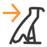

The Egyptological Unicode Converter is a Microsoft Word add-in that converts text in beta code to proper Egyptological, Hieroglyphic, Coptic, and Greek Unicode characters.
How to use
In Word, select some text written in Egyptological, Hieroglyphic, Coptic, or Greek beta code.
Choose either the
Transliteration,
 Hieroglyphs,
Coptic, or
Greek button in the ribbon in order to convert the beta code into the proper Unicode characters.
Note that a font covering the required Unicode characters must be installed for the characters to be displayed correctly.
For example, if your input is
sXA and you choose the
button,
sXA will be replaced by sẖꜣ.
Special rules for Egyptological Transliteration
Use an exclamation mark to avoid replacement:
e.g. a! → a, while a → ꜥ
Use an asterix to choose allographs of ỉ ṯ d ḏ:
i* and I* → ꞽ and Ꞽ instead of ỉ and Ỉ T* → č instead of ṯ d* → ṭ instead of d D* → č̣ instead of ḏ
Use the plus sign to make a character uppercase:
e.g. X+ → H̱, while X → ẖ
Special rules for Coptic
Use the plus sign to make a character uppercase:
e.g. D+ → Ϫ